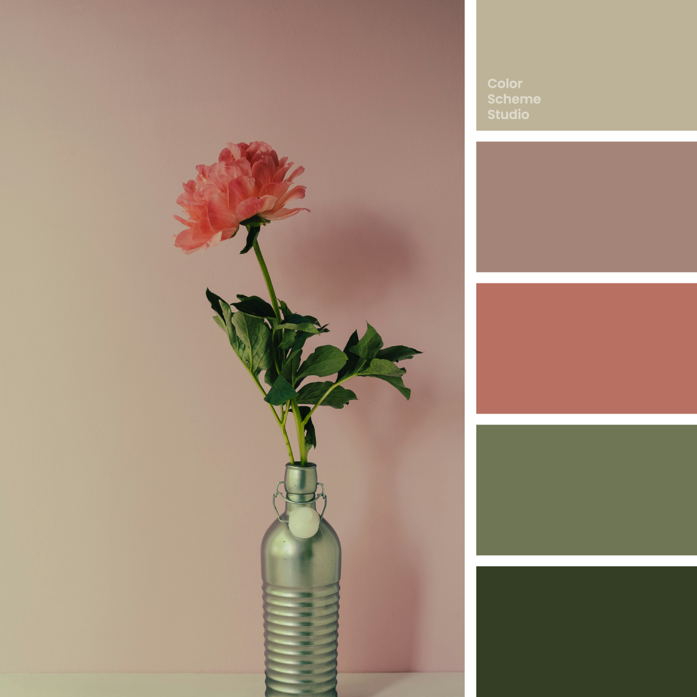

Vintage / Pastel
Vintage mellow color palette
Quiet Beige, Soft Taupe, Dusty Rose, Gentle Olive, Deep Olive. Explore five colours and copy their HEX values.

The palette
Click a hex to copyRGB & CMYK values
| Color | Hex | RGB | CMYK (approx.) |
|---|---|---|---|
| Quiet Beige | #BDB398 | 189 179 152 | 0 5 20 26 |
| Soft Taupe | #A48479 | 164 132 121 | 0 20 26 36 |
| Dusty Rose | #B87062 | 184 112 98 | 0 39 47 28 |
| Gentle Olive | #6F7655 | 111 118 85 | 6 0 28 54 |
| Deep Olive | #343E25 | 52 62 37 | 16 0 40 76 |
Warm rose, softened by beige and olive
Dusty Rose brings the warmest colour into this subdued palette, while Soft Taupe carries a quieter pink-brown undertone. Quiet Beige is lighter and more yellow, giving the two rosy colours a gentle change of temperature. Gentle Olive and Deep Olive introduce a green pair with a clear difference in depth. In the previews, beige holds a rose upright shape, a taupe circle and a smaller gentle-olive shape. The deepest olive anchors the action, keeping its light lettering clear against the softer colours. The result feels mellow through shared softness, while the warm rose and cooler greens remain distinct.
The palette, in use.
One way these five colours can look together.
A fresh
point of view.
Colour, stories and things
worth keeping.
A little
inspiration.
good idea.A collection worth coming back to.
Illustrative previews. White and dark ink are added for readable text.
Photo by 360floralflaves on Unsplash. Color studies and application notes by Color Scheme Studio.